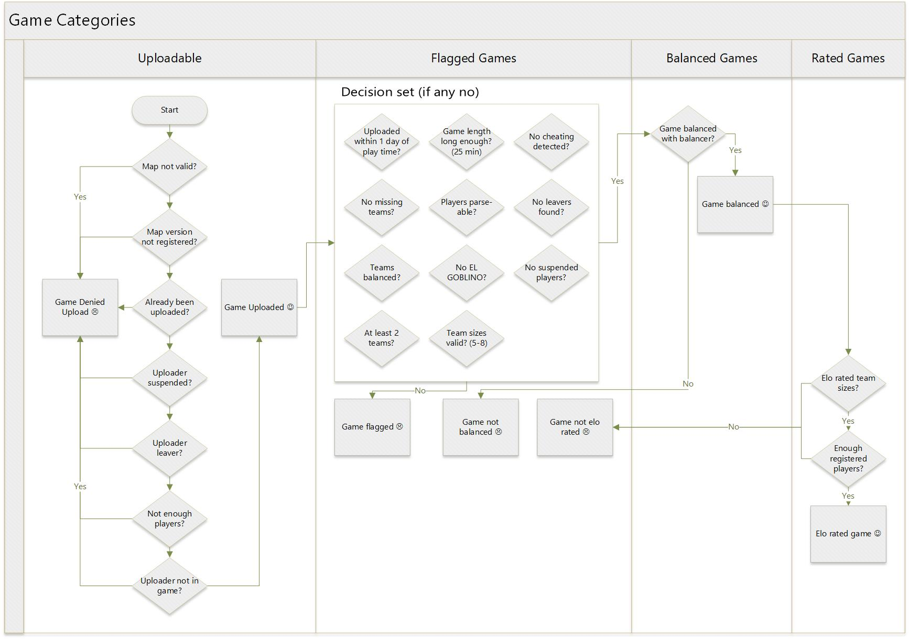
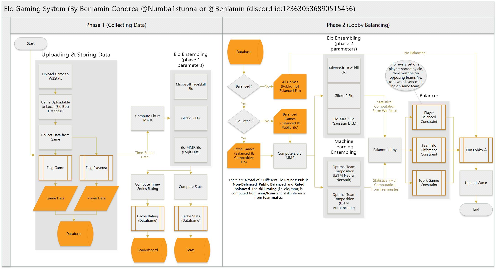

Beniamin Condrea
About me: Software Engineer, Machine Learning R&D Engineer
In my previous pursuit in Chemistry at University of San Diego, I went back to school for CS. I am a recent graduate from Oregon State University with a degree in Applied Computer Science, Artificial Intelligence.
I would like to thank some exceptional professors on my journey. It was a privilege to have them: Rob Hess for CS 162/261/290/492/493 (Introduction to Computer Science, Web Development, Data Structures, Cloud Application Development, and Mobile Development), Mike Bailey for CS 450/475 (Parallel Programming and Computer Graphics), and Stefan Lee for CS 434 (Machine Learning & Data Mining).
Below is a list of books I have completed or am currently working on (most of these are not for school, but rather as a hobby for broadening my knowledge):
While attending OSU, I generally would do assignments by myself, mainly because I want to learn as much as I can. I would even do unnecessary extra credit. You can request code examples. I would write guides for labs and setting up VSCode environments: from simple console applications to debugging JOS kernels.
While I started my higher education studies with an emphasis in Advanced Chemistry, I transitioned to an emphasis in Computer science after developing a passion for AI bots from a programming hobby project. During my pursuit for a Computer Science applied AI degree, I have been involved in helping students succeed. In the unprecedented time of COVID-19, remote learning had negatively impacted the learning experience and the need for interpersonal skills. Ensuring the success of the next generation of programmers requires solidifying foundational knowledge from the ground-up. To mitigate education quality compromises, due to work hour cuts, I voluntarily give back to the engineering by providing one-on-one Zoom meetings and writing extensive repositories for programming languages.
List of School projects. All of these project can be given if requested. Most Projects have been done on my own:
Some hobbies include: Running on trails, power lifting, olympic lifting, fixing cars, DIY projects. I occasionally go on long runs to deload from stress. In fact, most of my ideas come while running. My method of studying is simply planting the seed of knowledge, then go on a long run to think about it. I am still very much active in running, running about 50-70 miles a week. You can usually catch me on the trails for fun or on the street/track for speed runs.
I started writing bots since 2013. When I started programming AI I did not fully understand the fundamental concepts of programming. My code was very inefficient, it had more than 20,000 lines of code, and it did not perform tasks efficiently. Throughout the years, my hobby projects have been refactored 3 to 4 times. I realized education and a team environment were essential for accomplishing challenging tasks. So, after my previous pursuit in chemistry, I changed for a degree in Applied Computer Science in Artificial Intelligence. I have never been more driven to succeed. I am eager to learn more with the understanding that every class is useful for my passion. Teaching at OSU as a University Learning Assistant has allowed me to not only more fully understand programming in C/C++, Python, and Assembly but also provide a means to give back to community. I would also answer questions in class forums with detail such as Piazza. There were seasons in my life when I did not have time to help answer questions because I was busy. I was attending school full time while working two jobs: Teacher Assistant and Refereeing.
I am very much intrigued with reinforced learning. A personal project of making bots in a player-vs-player (playing against other players) and player-vs-environment (usually incorporate min-maxing) settings in video games drove me to write successful algorithms. Some optimizations include, as you might imagine, navigation (optimizing the shortest distance to a moving object) shortest distance around moving objects from A to B (imagine moving spheres, what is the shortest distance to B as the sphere objects move dynamically?), min-maxing against other players (what action would lessen the highest possible success in the opponent?). These are all common problems that Machine learning can be used, and video games are a fantastic way to learn how to code these. With over 7 years of experience writing bots, I am glad I started programming through a hobby. Albeit it took longer to learn without learning resources, I still enjoy to see the fruition of my labor.
Unfortunately, my guide has been taken down due to obvious reason, and I no longer have access to it. I wished I backed it up somewhere on an old hard drive. Some features I currently remember after 5-6 years ago were (I never made bots to make money, I only did it to learn how to code. And since it is a great environment to test AI code, I learned a lot.):
Here is a picture of my very early coding years. This was before I even learned anything about programming:
The image shows circle tangents. The idea is to get to the further wolf, you have to run around the other wolf without "aggro-ing" it. Multiple objects use recursion to find the shortest path to a location. A good heuristic navigation algorithm is known as the A* search algorithm. There are many variants, but because we generally deal with 1-20 objects, it is sufficient.

I have been involved in the Corvallis community by helping international students. Taking leadership and communications training through InterVasity for 10 weeks. Giving back to the community by helping international students at Oregon State University which include mitigating scams in housing and car insurance, teaching the English language and American culture, serving free lunch to build interpersonal skills, providing living accommodations, and coaching diet and fitness at the gym.
I take on some personal projects pertaining to machine learning. A group of friends needed a better ELO system, so I refactored their code using better design patterns and newer API. I also applied machine learning using LSTM and Autoencoder Neural Networks to compute skill inferences.
You can access the deployed ELO system on this Discord channel: https://discord.gg/DAm2C8mD Read about it in the ELO BOT section.  